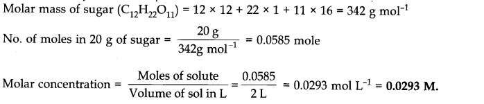

NCERT Solutions for Class 11 Chemistry Chapter 1 Some basic Concepts of Chemistry are part of Class 11 Chemistry NCERT Solutions. Here we have given NCERT Solutions for Class 11 Chemistry Chapter 1 Some basic Concepts of Chemistry.
NCERT Solutions for Class 11 Chemistry Chapter 1 Some basic Concepts of Chemistry
Topics and Subtopics in NCERT Solutions for Class 11 Chemistry Chapter 1 Some basic Concepts of Chemistry:
| Section Name | Topic Name |
| 1 | Some Basic Concepts of Chemistry |
| 1.1 | Importance of Chemistry |
| 1.2 | Nature of Matter |
| 1.3 | Properties of Matter and their Measurement |
| 1.4 | Uncertainty in Measurement |
| 1.5 | Laws of Chemical Combinations |
| 1.6 | Dalton’s Atomic Theory |
| 1.7 | Atomic and Molecular Masses |
| 1.8 | Mole Concept and Molar Masses |
| 1.9 | Percentage Composition |
| 1.10 | Stoichiometry and Stoichiometric Calculations |
NCERT Solutions Class 11 ChemistryChemistry Lab ManualChemistry Sample Papers
NCERT TEXTBOOK QUESTIONS SOLVED
Question 1. Calculate the molecular mass of the following:
(i) H20(ii) C02(iii) CH4
Answer: (i) Molecular mass of H2O = 2(1.008 amu) + 16.00 amu=18.016 amu
(ii) Molecular mass of CO2= 12.01 amu + 2 x 16.00 amu = 44.01 amu
(iii) Molecular mass of CH4= 12.01 amu + 4 (1.008 amu) = 16.042 amu
Question 2. Calculate the mass percent of different elements present in sodium sulphate (Na2 SO4).
Answer:
More CBSE Class 11 Study Material
- NCERT Solutions
- NCERT Solutions Class 11 Maths
- NCERT Solutions Class 11 Physics
- NCERT Solutions Class 11 Chemistry
- NCERT Solutions Class 11 Biology
- NCERT Solutions Class 11 Hindi
- NCERT Solutions Class 11 English
- NCERT Solutions Class 11 Business Studies
- NCERT Solutions Class 11 Accountancy
- NCERT Solutions Class 11 Psychology
- NCERT Solutions Class 11 Entrepreneurship
- NCERT Solutions Class 11 Indian Economic Development
- NCERT Solutions Class 11 Computer Science
Question 3. Determine the empirical formula of an oxide of Iron which has 69.9 % iron and 30.1 % dioxygen by mass.
Answer:
Question 4. Calculate the amount of carbon dioxide that could be produced when
(i) 1 mole of carbon is burnt in air.
(ii) 1 mole of carbon is burnt in 16 g of dioxygen.
(iii) 2 moles of carbon are burnt in 16 g of dioxygen.
Answer: The balanced equation for the combustion of carbon in dioxygen/air is
(i) In air, combustion is complete. Therefore,C02 produced from the combustion of 1 mole of carbon = 44 g.(ii) As only 16 g of dioxygen is available, it can combine only with 0.5 mole of carbon, i.e., dioxygen is the limiting reactant. Hence,C02 produced = 22 g.(iii) Here again, dioxygen is the limiting reactant. 16 g of dioxygen can combine only with 0.5 mole of carbon.C02 produced again is equal to 22 g.
Question 5. Calculate the mass of sodium acetate (CH3COONa) required to make 500 mL of 0.375 molar aqueous solution. Molar mass of sodium acetate is 82.0245 g mol-1
Answer: 0.375 M aqueous solution means that 1000 mL of the solution contain sodium acetate = 0.375 mole
Question 6. Calculate the concentration of nitric acid in moles per litre in a sample which has a density 1.41 g mL-1 and the mass percent of nitric acid in it is being 69%.
Answer: Mass percent of 69% means that 100 g of nitric acid solution contain 69 g of nitric acid by mass.
Molar mass of nitric acid HNO3= 1 + 14 + 48 = 63 gmol-1
Question 7. How much copper can be obtained from 100 g of copper sulphate (CuSO4 )? (Atomic mass of Cu= 63.5 amu)
Answer: 1 mole of CuS04 contains 1 mole (1 g atom) of Cu
Molar mass of CuS04= 63.5 + 32 + 4 x 16 = 159.5 g mol-1
Thus, Cu that can be obtained from 159.5 g of CuS04 = 63.5 g
Question 8. Determine the molecular formula of an oxide of iron in which the mass percent of iron and oxygen are 69.9 and 30.1 respectively. Given that the molar mass of the oxide is 159.8 g mol-1(Atomic mass: Fe = 55.85, O = 16.00 amu)Calculation of Empirical Formula. See Q3.
Answer: Empirical formula mass of Fe203 = 2 x 55.85 + 3 x 16.00 = 159.7 g mol–1
Hence, molecular formula is same as empirical formula, viz.,Fe203.
Question 9.Calculate the atomic mass (average) of chlorine using the following data:
Answer:

Question 10.In three moles of ethane (C2H6), calculate the following:
(i) Number of moles of carbon atoms (ii) Number of moles of hydrogen atoms
(iii) Number of molecules of ethane
Answer: (i) 1 mole of C2H6 contains 2 moles of carbon atoms
.•. 3 moles of C2H6 will C-atoms = 6 moles
(ii) 1 mole of C2H6 contains 6 moles of hydrogen atoms
.•. 3 moles of C2H6 will contain H-atoms = 18 moles
Question 11. What is the concentration of sugar (C12H22O11) in mol L -1 if its 20 g are dissolved in enough water to make a final volume up to 2 L?
Answer:

Question 12. If the density of methanol is 0.793 kg L -1, what is its volume needed for making 2.5 L of its 0.25 M solution?
Answer:
Question 13. Pressure is determined as force per unit area of the surface. The S.I. unit of pressure, pascal, is as shown below:1 Pa = 1 Nm-2.If mass of air at sea level is 1034 g cm-2,calculate the pressure in pascal.
Answer: Pressure is the force (i.e., weight) acting per unit area But weight = mg
Question 14. What is the S.I. unit of mass?
Answer: S.I. unit of mass is kilogram (kg).
Question 15. Match the following prefixes with their multiples:
Answer:
Question 16. What do you mean by significant figures?
Answer: The digits in a properly recorded measurement are known as significant figures. It is also defined as follows. The total numbers of figures in a number including the last digit whose value is uncertain is called number of significant figures.
Question 17. A sample of drinking water was found to be severely contaminated with chloroform, CHCly supposed to be carcinogenic in nature. The level of contamination was 15 ppm (by mass).
(i) Express this in percent by mass
(ii) Determine the molality of chloroform in the water sample.
Answer:
Question 18. Express the following in scientific notation:
(i) 0.0048 (v) 6.0012 (ii) 234,000 (iii) 8008 (iv) 500.0
Answer:
Question 19. How many significant figures are present in the following?
(i) 0.0025 (ii) 208 (iii) 5005 (iv) 126,000
(v) 500.0 (vi) 2.0034
Answer: (i) 2 (ii) 3 (iii) 4 (iv) 3 (v) 4 (vi) 5.
Question 20. Round up the following upto three significant figures:
(i) 34.216 (ii) 10.4107 (iii) 0.04597 (iv) 2808
Answer: (i) 34.2 (ii) 10.4 (iii) 0.0460 (iv) 2810
Question 21. The following data were obtained when dinitrogen and dioxygen react together to form compounds:

Answer: (a) Fixing the mass of dinitrogen as 28 g, masses of dioxygen combined will be 32,64, 32 and 80 g in the given four oxides. These’are in the ratio 1 : 2 : 1 : 5 which is a simple whole number ratio. Hence, the given data obey the law of multiple proportions.
Question 22.
Answer:
Question 23. In the reaction, A + B2——> AB2, identify the limiting reagent, if any, in the following mixtures
(i) 300 atoms of A + 200 molecules ofB
(ii) 2 mol A + 3 mol B
(iii) 100 atoms of A + 100 molecules ofB
(iv) 5 mol A + 2.5 mol B
(v) 2.5 mol A + 5 mol B
Answer: (i) According to the given reaction, 1 atom of A reacts with 1 molecule of B
.•. 200 molecules of B will react with 200 atoms of A and 100 atoms of A will be
left unreacted. Hence, B is the limiting reagent while A is the excess reagent.
(ii) According to the given reaction, 1 mol of A reacts with 1 mol of B
.•. 2 mol of A will react with 2 mol of B. Hence, A is the limiting reactant.
(iii) No limiting reagent.
(iv) 2.5 mol of B will react with 2.5 mol of A. Hence, B is the limiting reagent.
(v) 2.5 mol of A will react with 2.5 mol of B. Hence, A is the limiting reagent.
Question 24. Dinitrogen and dihydrogen react with each other to produce ammonia according to the following chemical equation:(i) N2 (g) + 3H2(g) —–> 2NH3 (g)
(ii) Will any of the two reactants remain unreacted?
(iii) If yes, which one and what would be its mass?
Answer:
Question 25. How are 0.50 mol Na2C03 and 0.50 M Na2C03 different?
Answer: Molar mass of Na2C03= 2 x 23 + 12 + 3 x 16 = 106g mol-1 0.50 mol Na2C03 means 0.50 x 105 g = 53 g 0. 50 M Na2C03 means 0.50 mol, i.e., 53 g Na2C03 are present in 1 litre of the solution.
Question 26. If ten volumes of dihydrogen gas reacts with five volumes of dioxygen gas, how many volumes of water vapour could be produced?
Answer: H2 and 02 react according to the equation
2H2(g) + 02 (g) ——>2H2O (g)
Thus, 2 volumes of H2 react with 1 volume of 02 to produce 2 volumes of water vapour. Hence, 10 volumes of H2 will react completely with 5 volumes of 02 to produce 10 volumes of water vapour.
Question 27. Convert the following into basic units:
(i) 28.7 pm (ii) 15.15 µs (iii) 25365 mg
Answer:
Question 28. Which one of the following will have largest number of atoms?
(i) 1 g Au (s) (ii) 1 g Na (s) (iii) 1 g Li (s) (iv) 1 g of Cl2(g) (Atomic masses: Au = 197, Na = 23, Li = 7, Cl = 35.5 amu)
Answer:
Question 29. Calculate the molarity of a solution of ethanol in water in which the mole fraction of ethanol is 0.040.
Answer:
Question 30.
Answer:
Question 31. How many significant figures should be present in the answer of the following?
Answer: (i) The least precise term has 3 significant figures (i.e., in 0.112). Hence, the answer should have 3 significant figures.
(ii) Leaving the exact number (5), the second term has 4 significant figures. Hence, the answer should have 4 significant figures.
(iii) In the given addition, the least number of decimal places in the term is 4. Hence, the answer should have 4 significant.
Question 32. Use the data given in the following table to calculate the molar mass of naturally occurring argon.
Answer: Molar mass of Ar = 35.96755 x 0.00337 + 37.96272 x 0.00063 + 39.96924 x 0.99600 = 39.948 g mol-1
Question 33. Calculate the number of atoms in each of the following:
(i) 52 moles of He (ii) 52 u of He (iii) 52 g of He
Answer:
Question 34. A welding fuel gas contains carbon and hydrogen only. Burning a small sample of it in oxygen gives 3.38 g carbon dioxide, 0.690 g of water and no other products. A volume of 10.0 L (measured at S.T.P.) of this welding gas is found to weigh 11.6 g. Calculate (i) empirical formula, (ii) molar mass of the gas, and (iii) molecular formula.
Answer:
Question 35. Calcium carbonate reacts with aqueous HCl according to the reaction
CaC03 (s) + 2HCl (aq) ———->CaCl2 (aq) +C02(g) +H2O(l).
What mass of CaC03 is required to react completely with 25 mL of 0.75 M HCl?
Answer: Step 1. To calculate mass of HCl in 25 mL of 0.75 m HCl
1000 mL of 0.75 M HCl contain HCl = 0.75 mol = 0.75 x 36.5 g = 24.375 g
Step 2. To calculate mass of CaC03reacting completely with 0.9125 g of HCl
CaC03 (s) + 2HC1 (aq)———->CaCl2(aq) +C02(g) + H2O
2 mol of HCl, i.e., 2 x 36.5 g = 73 g HCl react completely with CaC03 = 1 mol = 100 g
Question 36. Chlorine is prepared in the laboratory by treating manganese dioxide (Mn02) with aqueous hydrochloric acid according to the reaction.
4 HCl (aq) + Mn02 (s) ———–> 2 H2O (l) + MnCl2(aq) +Cl2(g)
How many grams of HCl react with 5.0 g of manganese dioxide? (Atomic mass of Mn = 55 u)
Answer: 1 mole of Mn02, i.e., 55 + 32 = 87 g Mn02 react with 4 moles of HCl, i.e., 4 x 36.5 g = 146 g of HCl.
MORE QUESTIONS SOLVED
I.Very Short Answer Type Questions
Question 1. What is the SI unit of molarity?
Answer: SI unit of molarity = mol dm-3
Question 2. What do you understand by stoichiometric coefficients in a chemical equation?
Answer: The coefficients of reactant and product involved in a chemical equation represented by the balanced form, are known as stoichiometric coefficients.
For example, N2(g) + 3H2(g) ———–> 2 NH3(g)
The stoichiometric coefficients are 1, 3 and 2 respectively.
Question 3. Give an example of a molecule in which the ratio of the molecular formula is six times the empirical formula.
Answer: The compound is glucose. Its molecular formula is C6H12O6, while empirical formula is CH2O.
Question 4. What is an atom according to Dalton’s atomic theory?
Answer: According to Dalton’s atomic theory, an atom is the ultimate particle of matter which cannot be further divided.
Question 5. Why air is not always regarded as homogeneous mixture?
Answer: This is due to the presence of dust particles.
Question 6. Define the term ‘unit’ of measurement.
Answer: It is defined as the standard of reference chosen to measure a physical quantity.
Question 7. Define law of conservation of mass.
Answer: It states that matter can neither be created nor destroyed.
Question 8. How is empirical formula of a compound related to its molecular formula?
Answer: Molecular formula = (Empirical formula)n where n is positive integer.
Question 9. How many oxygen atoms are there in 18 g of water?
Answer: Molar mass of water is 18 g/mol.
Number of oxygen atoms is 18 g of water = 6.02 x 1023
Question 10. Name two factors that introduce uncertainty into measured figures.
Answer: (i) Reliability of measuring instrument.
(ii) Skill of the person making the measurement.
Question 11. State Avogadro’s law.
Answer: Equal volumes of all gases under the conditions of same temperature and pressure contain the same number of molecules.
Question 12. How are 0.5 ml of NaOH differents from 0.5 M of NaOH?
Answer: 0.5 ml of NaOH means 0.5 mole (20.0 g) of NaOH, 0.5M of NaOH means that 0.5 mole (20.0g) of NaOH are dissolved in 1L of its solution.
Question 13. What is one a.m.u. or one ‘u’?
Answer: 1 a.m.u. or 1 u = 1/12 th mass of an atom of carbon 12.
Question 14. What is the number of significant figures in 1.050 x 104?
Answer: Four.
II. Short Answer Type Questions
Question 1. Define molality. How does molality depend on temperature?
Answer: Molality is defined as the moles of solute per kilogram of solvent.
Molality of a solution does not depend on temperature.
Question 2. Convert 2.6 minutes in seconds.
Answer: We know that, 1 min = 60 s
Conversion factor =60 s/(1min)
2.6 min = 2.6 min x conversion factor = 2.6 x 60s/1min= 156 s.
Question 3. Express the following up to four significant figures.
Answer:
Question 4. Calculate the number of moles in each of the following.
Answer:
Question 5. A compound on analysis was found to contain C = 34.6%, H = 3.85% and O = 61.55%. Calculate the empirical formula.
Answer: Step I. Calculation of simplest whole number ratios of the elements.

The simplest whole number ratios of the different elements are: C:H:O::3:4:4
Step II. Writing the empirical formula of the compound.
The empirical formula of the compound = C3H4O4.
Question 6.Calculate:
(a) Mass of 2.5 gram atoms of magnesium,
(b) Gram atom in 1.4 grams of nitrogen (Atomic mass Mg = 24, N = 14)
Answer: (a) 1 gram atom of Mg = 24g
2.5 gram atoms of Mg = 24 x 2.5 = 60g
(b) 1 gram atom of N = 14g;
14g of N = 1 gram atom 1
1.4g of N = 1/14 x 1.4 = 0.1 gram atom.
Question 7. The density of water at room temperature is 1.0 g/mL. How many molecules are there in a drop of water if its volume is 0.05 mL?
Answer:
Question 8.What is the molecular mass of a substance each molecule of which contains 9 atoms of carbon, 13 atoms of hydrogen and 2.33 x 10-23 g other component?
Answer:
III. Long Answer Type Questions
Question 1. Calculate no. of carbon and oxygen atoms present in 11.2 litres of C02 at N.T.P.
Answer: Step I. Number of C02molecules in 11.2 litres
Question 2. KCl03 on heating decomposes to give KCl and 02. What is the volume of 02 at N.T.P liberated by 0.1 mole of KCl03?
Answer: The chemical equation for the decomposition of KCl03 is
Question 3. 10 ml of a solution of NaCl containing KCl gave on evaporation 0.93 g of the mixed salt which gave 1.865 g of AgCl by reacting with AgN03solution. Calculate the quantity of NaCl in 10 mL of the solution.
Answer: The chemical equation for the reaction is:
Question 4. The cost of table salt (NaCl) and table sugar (C12H22O11) are Rs 1 per kg and Rs 6 per kg respectively.Calculate their cost per mole.
Answer: (a) Cost of table salt (NaCl) per mole
Gram molecular mass of NaCl = 23 + 35.5 = 58.5 g Now, 1000 g of NaCl cost = Rs 2
(b) Cost of table sugar (C12H22O11) per mole
Gram molecular mass of (C12H22O11) = 12 x 12 + 22 x 1 = 16 x 1= 144 + 22 + 176 = 342 g
Now, 1000 g of sugar cost = Rs 6
Question 5. A flask P contains 0.5 mole of oxygen gas. Another flask Q contains 0.4 mole of ozone gas. Which of the two flasks contains greater number of oxygen atoms?
Answer: 1 molecule of oxygen (O2) = 2 atoms of oxygen
1 molecule of ozone (O3) = 3 atoms of oxygen
Question 6. Calculate the total number of electrons present in 1.6 g of methane.
Answer:
Question 7. The vapour density of a mixture of N02 and N204is 38.3 at 27°C. Calculate the number of moles of N02 in 100 g of the mixture.
Answer:
Question 8. The Vapour Density of a gaseous element is 5 times that of oxygen under similar conditions. If the molecule is triatomic, what will be its atomic mass?
Answer: Molecular mass of oxygen = 32 u
NCERT Solutions for Class 11 Chemistry All Chapters
- Chapter 1 Some Basic Concepts of Chemistry
- Chapter 2 Structure of The Atom
- Chapter 3 Classification of Elements and Periodicity in Properties
- Chapter 4 Chemical Bonding and Molecular Structure
- Chapter 5 States of Matter
- Chapter 6 Thermodynamics
- Chapter 7 Equilibrium
- Chapter 8 Redox Reactions
- Chapter 9 Hydrogen
- Chapter 10 The sBlock Elements
- Chapter 11 The pBlock Elements
- Chapter 12 Organic Chemistry: Some Basic Principles and Techniques
- Chapter 13 Hydrocarbons
- Chapter 14 Environmental Chemistry
We hope the NCERT Solutions for Class 11 Chemistry Chapter 1 Some basic Concepts of Chemistry help you. If you have any query regarding NCERT Solutions for Class 11 Chemistry Chapter 1 Some basic Concepts of Chemistry, drop a comment below and we will get back to you at the earliest.